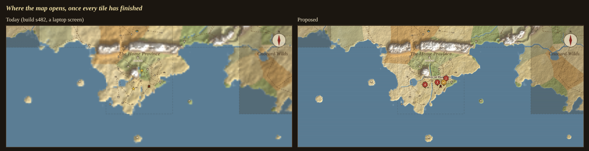
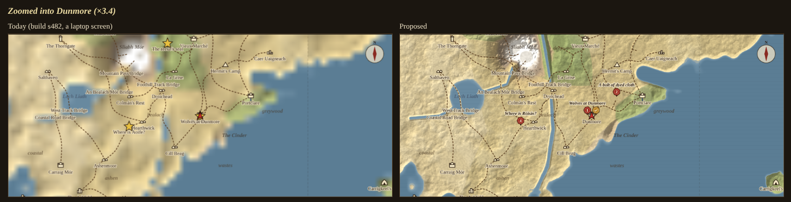
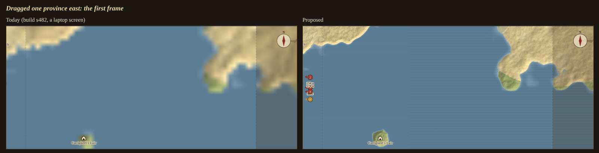
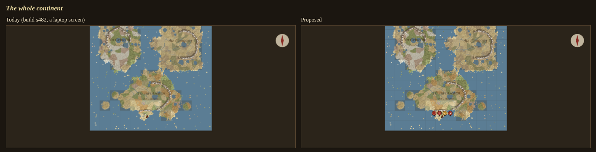
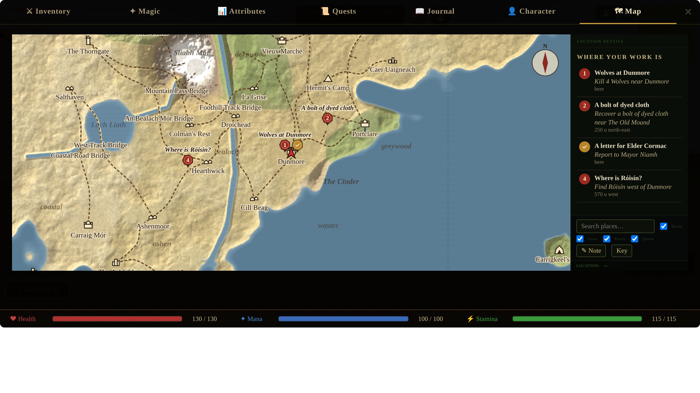
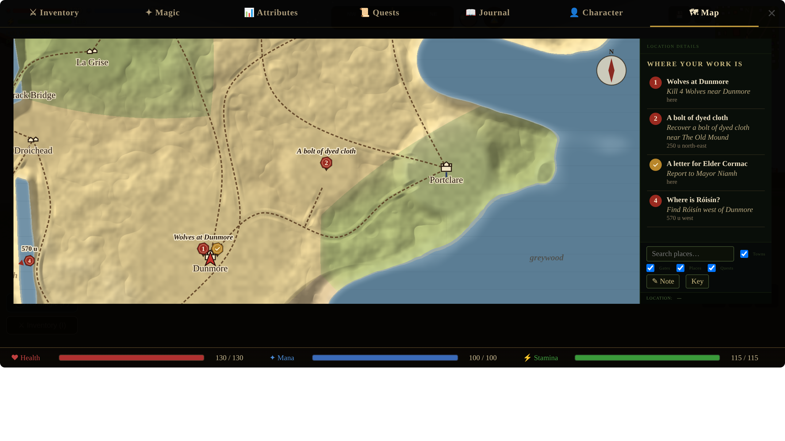
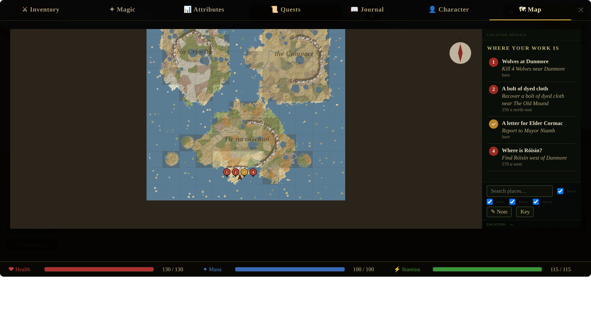

The world map, sharp, with your quests on it
Concept artist, 9 Oct 2026 · backlog E, Michael's notes of 5 Oct: "We need quest markers to work on the overworld map" and "The overworld map is very often blurry / does not render well." Today's build is s482 (main, 9 Oct). Every picture is the game itself in headless Chromium at 1280×720, the proposal loaded over it from proposal.js.
Why it is blurry
- The canvas ignores the screen's pixel ratio. It is sized in CSS pixels (
root.width = r.widthinopenMap): on a laptop's screen (ratio 2) the map pane is 1021×433 CSS pixels and so 1021×433 canvas pixels, stretched to 2042×866. Every tile, road, icon and letter is drawn at half the screen's resolution. - The fine tiles crawl. A province's fine tile (320 px) is built by
mapJobs, which does one 12-row step a frame and thenbreaks whatever its 24 ms budget: 54 frames a tile, one tile at a time. The map opens on 15 tiles, so the last province turns sharp 810 frames (13.5 s at 60 fps) after you press Tab. Until then a province is its 48-pixel coarse tile stretched across 240–810 screen pixels: the blocky mush in the pictures. - Past one zoom step nothing gets finer. The fine tile is 320 px a province; the map opens at 238 px a province and zooms to 64 times that. At ×3.4 a tile pixel covers 2.5 screen pixels (5 on a laptop).
Why the quest marks don't work
The map keeps its own list of marks (questMarkers, 87-world-quests.js) and the compass another (compassMarkers). With four of Dunmore's jobs taken and one done, the compass shows four marks and the map three: the map has no mark for a job that is done (report to Mayor Niamh), and none for a find quest's person on the move, a townsperson's directions, the faction, war and guild marks, Corwin, or Act I's givers. The map draws no marks at all below 60 px a province (the whole continent: 0 entries), every mark is the same yellow star, and a mark off the edge of the view is simply gone.
The proposal
- The canvas at CSS size × the pixel ratio, drawn in CSS units through
setTransform, so nothing else in the map's maths changes. - Tiles in a quadtree: a province, its quarters, their quarters, five levels down (75 units a tile side), 256 px each, the level chosen so a tile pixel is never more than 1.15 screen pixels. The jobs spend their budget (8 ms a frame) on tiles nearest the middle first; a tile not ready is drawn from its best finished ancestor, cropped, never from the 48-px tile once something finer exists. Water hatching keeps 45 units between its lines at every level.
mapMarks(): the compass's list, each mark carrying its quest's title and line. Every mark is drawn at every zoom as a numbered wax seal — red: go there; gilt with a tick: report back; blue: directions — with a tag pointing at the spot. Seals on one spot stand side by side; a title is printed only where it clears the others. A mark off the view sits on the frame with an arrow and its distance. With nothing hovered, the panel lists the marks under Where your work is, numbered as on the map; a click centres the map on one.
Today and proposed




The proposal, whole screens (laptop ratio)



Numbers
| Today | Proposed | |
|---|---|---|
| Canvas on a ratio-2 screen | 1021×433 | 2042×866 |
| Where it opens (238 px a province) | 15 tiles of 320, 810 frames to sharp, at 1× only | 36 tiles of 256 at 2×: 7.6 s of work on this container, 908 frames of 8 ms; the middle first |
| Zoomed ×3.4 (810 px a province) | the same 320 tiles stretched ×2.5 (×5 at ratio 2) | 55 more tiles at level 3, 11.2 s of work here, 1,339 frames |
| Marks with four jobs taken, one done | 3 of the compass's 4; none on the continent | 4 of 4 at every zoom; the off-view ones on the frame |
The work is measured in this container, which runs about five times slower than a desktop (a 320 tile takes 551 ms here; the same frame budget gets several times as far on a real machine). A tile is kept once built, so a province is paid for once a session. Today's own tiles cost the same work per pixel; they only dribble it out.
For the builder
proposal.js is a plain script; each function in it replaces its namesake in js/83-world-generator.js (baseScale, mapClamp, visibleCells, openMap, mapJobs, mapDraw, mapPanel) and adds startQ/stepQ/drawCell, mapMarks, drawMarks and mapPickMark. WORLD.openMap must point at the new one (the hub opens it through the export). Still owed in a build: mapPick, mapPickNote and the search's centring read MAP.cv.width and want the CSS size; the hover card should open on a seal (mapPickMark); the Key's ★ a quest line becomes the three seals; questMarkers can go once the map reads mapMarks. Scripts: shoot-current.mjs (today), shoot.mjs (the proposal), compare.mjs (the plates).